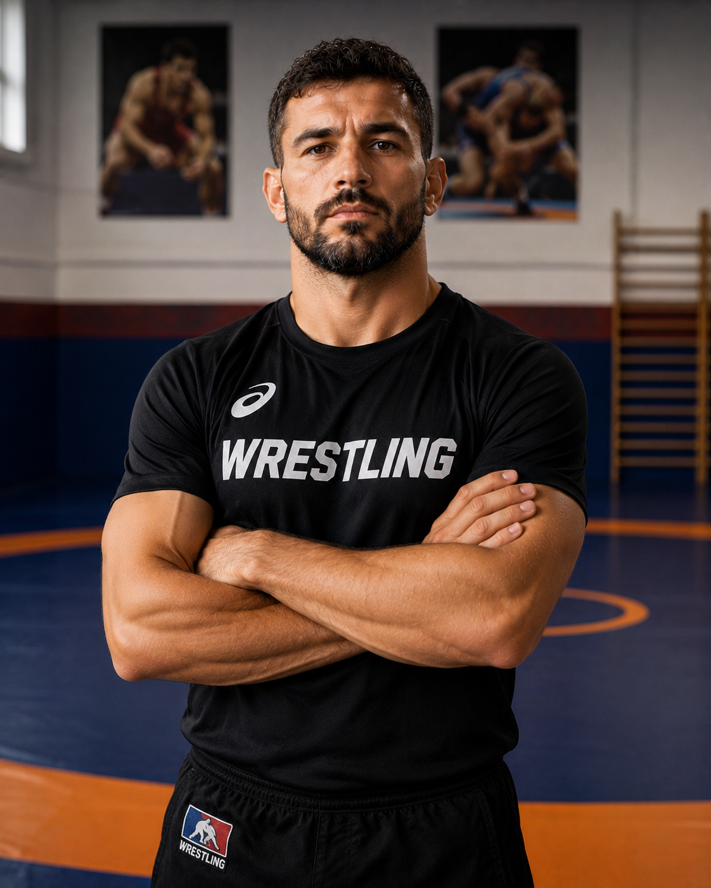

Kiss Gergő
Kiss Gergő gyermekkora óta birkózik, és több országos bajnokságon ért el dobogós helyezést. A kezdő és ut ánpótlás-csoportok edzőjeként az alapállásra, az eséstechnikára, a fogásbiztonságra és az egyszerű levitelekre helyezi a hangsúlyt. Edzésein sok koordinációs és játékos erőfejlesztő feladat szerepel. Türelmes, ugyanakkor következetes módszerével segít minde n sportolónak magabiztosan fejlődni. Célja, hogy tanítványai erős technikai alapokat és pozitív versenyszellemet alakítsanak ki.